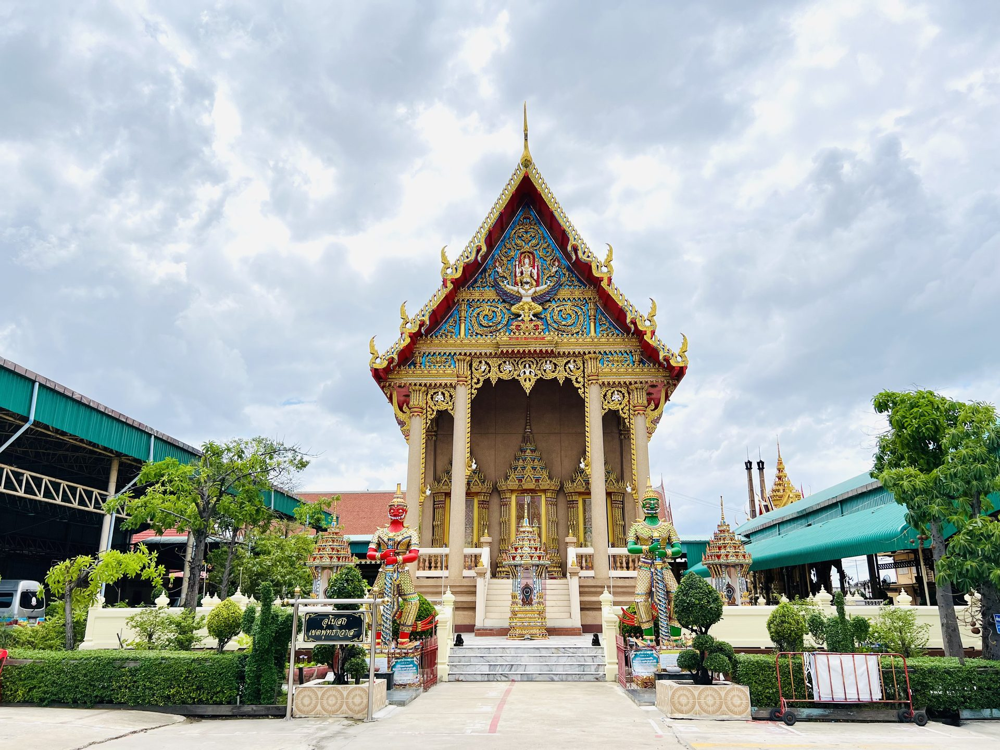

ประวัติวัดโพธิ์แจ้

วัดโพธิ์แจ้ ตั้งอยู่เลขที่ ๑ หมู่ที่ ๓ ถนนเอกชัย ตำบลบางน้ำจืด อำเภอเมืองสมุทรสาคร จังหวัดสมุทรสาคร สังกัดคณะสงฆ์มหานิกาย
ก่อตั้งขึ้นราว พ.ศ. ๒๔๕๔ จากสำนักสงฆ์ที่ชาวบ้านเรียกว่า “วัดตายิ้ม” ภายหลังเปลี่ยนนามเป็น “วัดโพธิ์แจ้” ตามชื่อชุมชนบ้านโพธิ์แจ้ ซึ่งในอดีตมีต้นโพธิ์แจ้ขึ้นอยู่เป็นจำนวนมาก
- ก่อตั้ง
- ราว พ.ศ. ๒๔๕๔
- เนื้อที่
- ๒๔ ไร่ ๘.๕ ตร.ว.
- สังกัด
- มหานิกาย
- พระประธาน
- หลวงพ่อโต
ลำดับเหตุการณ์สำคัญ
- ๒๔๕๔ก่อตั้งเป็นสำนักสงฆ์ชาวบ้านเรียก “วัดตายิ้ม” ตามชื่อนายยิ้ม จูพราย ผู้ริเริ่ม
- ๒๔๖๖อุโบสถหลังแรกแล้วเสร็จหน้าบันจารึกนาม “วัดโพธิ์สิริราช จ๊ะ” ภายหลังเปลี่ยนเป็น “วัดโพธิ์แจ้”
- ๒๔๖๙อัญเชิญหลวงพ่อโตพระประธานปางมารวิชัย จากวัดบางประทุน (วัดแก้วไพฑูรย์)
- ๒๕๐๖พระครูสาครปิยธรรมเริ่มดำรงตำแหน่งเจ้าอาวาส ยาวนานถึง ๕๓ ปี (ถึง พ.ศ. ๒๕๕๙)
- ๒๕๒๐วิสุงคามสีมาได้รับพระราชทานเมื่อวันที่ ๓๐ สิงหาคม
- ๒๕๒๑อุโบสถหลังใหม่เริ่มสร้างเมื่อวันที่ ๑๒ มกราคม
- ๒๕๒๙ผูกพัทธสีมาประกอบพิธีเมื่อวันที่ ๖ กุมภาพันธ์
- ๒๕๖๐พระครูวัชรธรรมสาคร ดร.เจ้าอาวาสรูปปัจจุบัน ตั้งแต่วันที่ ๑ พฤษภาคม
อ่านประวัติเต็มย่อประวัติ
๑ ข้อมูลทั่วไปและที่ตั้ง
วัดโพธิ์แจ้ ตั้งอยู่เลขที่ ๑ หมู่ที่ ๓ ถนนเอกชัย ตำบลบางน้ำจืด อำเภอเมืองสมุทรสาคร จังหวัดสมุทรสาคร สังกัดคณะสงฆ์มหานิกาย มีอาณาเขตติดต่อดังนี้
วัดมีเนื้อที่จำนวน ๒๔ ไร่ ๘.๕ ตารางวา | ปัจจุบันมีพระภิกษุจำพรรษาประมาณ ๓๐–๔๐ รูป
๒ ประวัติการสร้างและนามวัด
วัดโพธิ์แจ้ก่อตั้งขึ้นเมื่อประมาณ พ.ศ. ๒๔๕๔ เริ่มต้นจากการเป็นสำนักสงฆ์ โดยชาวบ้านเรียกขานกันว่า “วัดตายิ้ม” ตามชื่อผู้ริเริ่มก่อตั้ง คือ นายยิ้ม จูพราย ร่วมกับนายแดง จูพราย และนายทับ มุขจั่น ซึ่งเป็นผู้บริจาคที่ดิน
เมื่อมีการสร้างอุโบสถหลังแรกแล้วเสร็จในปี พ.ศ. ๒๔๖๖ ปรากฏหลักฐานจารึกนามวัดที่หน้าบันว่า “วัดโพธิ์สิริราช จ๊ะ” ต่อมาได้เปลี่ยนชื่อเป็น “วัดโพธิ์แจ้” เพื่อให้สอดคล้องกับนามชุมชน “บ้านโพธิ์แจ้” ซึ่งมีที่มาจากสภาพพื้นที่ในอดีตบริเวณวัดและชุมชนรายล้อมไปด้วย ต้นโพธิ์แจ้ (หมายถึง ต้นโพธิ์ที่มีลักษณะต้นเล็ก เตี้ย ไม่สูงใหญ่) ขึ้นอยู่เป็นจำนวนมาก จึงเป็นที่มาของชื่อหมู่บ้านและชื่อวัดในเวลาต่อมา
๓ ปูชนียวัตถุและเสนาสนะ
พระประธาน (หลวงพ่อโต)
ประดิษฐานในอุโบสถหลังเก่า (วิหาร) เป็นพระพุทธรูปปางมารวิชัย เนื้อทองเหลืองลงรักปิดทอง หน้าตักกว้าง ๓ ศอก เดิมประดิษฐานอยู่ที่วัดบางประทุน (วัดแก้วไพฑูรย์) เขตบางขุนเทียน โดยนางชื่น แก้วงาม ได้อัญเชิญมาและบูรณะซ่อมแซมเพื่อถวายเป็นพระประธานแก่วัดโพธิ์แจ้เมื่อ พ.ศ. ๒๔๖๙
อุโบสถหลังใหม่
สร้างเมื่อวันที่ ๑๒ มกราคม พ.ศ. ๒๕๒๑ เป็นอาคารคอนกรีตเสริมเหล็กประดับลวดลายปูนปั้นทรงไทย สร้างขึ้นทดแทนหลังเก่าที่ทรุดโทรมและได้รับผลกระทบจากเสียงรบกวนเนื่องจากการขยายถนนเอกชัย ได้รับพระราชทานวิสุงคามสีมาเมื่อวันที่ ๓๐ สิงหาคม พ.ศ. ๒๕๒๐ และประกอบพิธีผูกพัทธสีมาเมื่อวันที่ ๖ กุมภาพันธ์ พ.ศ. ๒๕๒๙
เสนาสนะอื่น ๆ
ภายในวัดประกอบด้วยศาลาการเปรียญ, ศาลาบำเพ็ญกุศล ๗ หลัง, หอฉัน, หอพระไตรปิฎก, หอกลอง, หอระฆัง, ฌาปนสถาน (เมรุ), ศาลาปฏิบัติธรรม, โรงเรียนพระปริยัติธรรม และกุฏิสงฆ์รวมกว่า ๓๐ หลัง
๔ ลำดับเจ้าอาวาสและการพัฒนา
ท่านได้วางผังวัดใหม่ ขยายเขตที่ดิน และสร้างถาวรวัตถุสำคัญ เช่น ศาลาการเปรียญ หอสวดมนต์ และจัดระเบียบกุฏิสงฆ์ ท่านมรณภาพเมื่อ พ.ศ. ๒๕๐๕
ดำรงตำแหน่งตั้งแต่ พ.ศ. ๒๕๐๖ – ๒๕๕๙ (๕๓ ปี) เป็นยุคที่มีการพัฒนาอย่างต่อเนื่อง ทั้งการสร้างอุโบสถหลังใหม่ การสร้างรั้วคอนกรีตรอบวัด การจัดซื้อที่ดินขยายวัด และการสร้างศาสนสถานครบวงจร
ดำรงตำแหน่งตั้งแต่วันที่ ๑ พฤษภาคม พ.ศ. ๒๕๖๐ จนถึงปัจจุบัน ท่านได้สานต่องานพัฒนา ปรับปรุงภูมิทัศน์ และจัดซื้อที่ดินเพิ่มเติมจนวัดมีความสวยงามดังที่ปรากฏ
๕ การศึกษาและการเผยแผ่พระพุทธศาสนา
ทางวัดให้ความสำคัญกับการศึกษาทั้งทางธรรมและทางโลก โดยสนับสนุนให้พระภิกษุสามเณรศึกษาและเข้าสอบนักธรรม-บาลีสนามหลวงเป็นประจำทุกปี ในด้านสังคมสงเคราะห์ ได้มอบทุนการศึกษาและอุปกรณ์การเรียนแก่โรงเรียนวัดโพธิ์แจ้ (มาลีราษฎร์บำรุง) และโรงเรียนอื่นๆ อย่างต่อเนื่อง
ด้านการเผยแผ่ธรรมะ
ทางวัดได้จัดส่งพระวิทยากรไปทำการสอนและบรรยายธรรม ณ สถานศึกษาต่าง ๆ ได้แก่ โรงเรียนวัดโพธิ์แจ้ (มาลีราษฎร์บำรุง) โรงเรียนบ้านหนองหาดใหญ่ โรงเรียนศึกษานารีวิทยา และโรงเรียนทานตะวันไตรภาษา นอกจากนี้ โรงเรียนวัดโพธิ์แจ้ (มาลีราษฎร์บำรุง) ยังได้รับเลือกให้เป็นสนามสอบธรรมศึกษา รวมถึงทางวัดยังได้จัดอบรมประชาชนในวันสำคัญทางศาสนา และมีการบริหารจัดการวัดตามหลักพระธรรมวินัยและกฎมหาเถรสมาคมอย่างเคร่งครัด
ข่าวประชาสัมพันธ์
ปฏิทินกิจกรรม
แกลเลอรีภาพ
ทำบุญออนไลน์

ร่วมทำบุญบำรุงวัดโพธิ์แจ้ เพื่อสืบสานพระพุทธศาสนาและพัฒนาวัดให้เจริญรุ่งเรือง
- ธนาคาร
- ชื่อบัญชี
- เลขที่บัญชี
ทำเนียบเจ้าอาวาส
พระสังฆาธิการ
ติดต่อสอบถาม
วัดโพธิ์แจ้ เลขที่ ๑ หมู่ ๓ ถนนเอกชัย
ต.บางน้ำจืด อ.เมืองสมุทรสาคร
จ.สมุทรสาคร ๗๔๐๐๐
เพิ่มเพื่อน LINE วัดโพธิ์แจ้
สแกน QR Code ด้วยแอป LINE เพื่อรับข่าวสารและกิจกรรมของวัด
เพิ่มเพื่อน LINEการสมัครบวช
กรุณาเดินทางมาแจ้งความจำนงที่วัดด้วยตนเอง เพื่อสอบทานคุณสมบัติเบื้องต้น